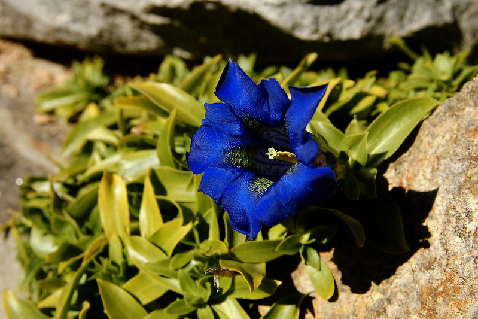

Germany | Spirits | Making-off
Gentian Mountain Liquor
28 April 2020
The making of 'Engian': German Gentian Liquor

The alpine plant Gentian
Introduction
The German Alps are best known as holiday destination, lederhosen and Almhütte (Mountain Huts).
An 'Enzian' with white flowers
It is less known for a spirit made from the alpine plant Gentian, or 'Enzian' in German.
Gentian
Gentian grows all across Europe in mountainous regions - and especially at high altitudes. Different sub-species vary in color: the main ones are blue, yellow, white and green.
In an age-old process (if not tradition), the plant is used to distill alcohol and make a strong spirit. German's oldest Gentian distillery is
Enzian Grassl: it is well over 300 years old.
Grassl makes its traditional product in remote huts. Some of them are so far and high, that helicopters have to retrieve the alcohol once it is finsihed.
Mountain Spirit
In the case of Grassl, traditional Gentian 'schnapps' is made on location in mountain huts. In the early days, the distillers would climb up the mountains to fill backpacks with the Gentian they could find. Nowadays, the Gentian is planted.
Gentian spirit is made from the plant's roots. Modern distillers prefer to use the yellow-colored Gentian and the Spotted Gentian for their superior bitter taste.
#Fun Fact: The Yellow- and the Spotted Gentians are only found in the German and Austrian part of the alps.
In the harvesting process, it is rather important to distinguish it from the white hellebrore,
The Königsee examplifies the beauty of Bayern
as it looks identical to the yellow gentian, but is poisonous.
In order to make gentian spirits, the enitrety of the plants' roots are used. They are cleaned and mixed with water to make the bitter and clear final product.
If you were to travel to Bayern one day, you may like to visit Enzian Grassl's museum in Berchtesgaden, where they explain the distilling process in more detail or see their instagram if you don't have that ability.